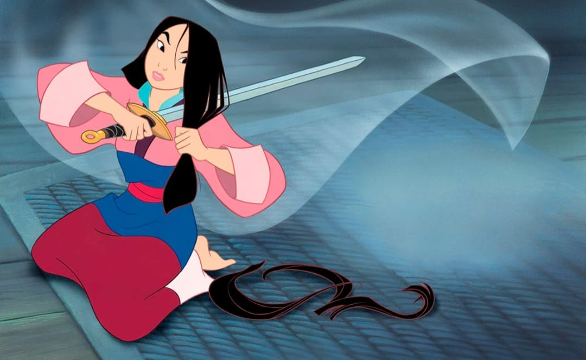
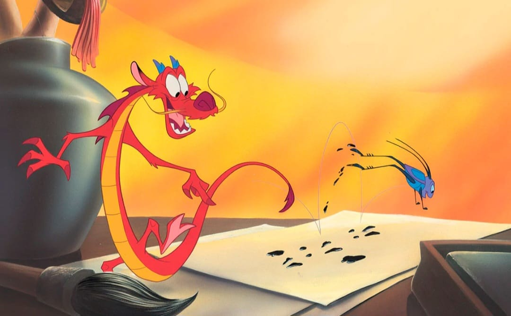

Érase una vez una familia china que tenía una hija llamada Mulán.
Mulán vivía en una casa hermosa, pero humilde donde era muy feliz. Allí tenía las aventuras más disparatadas en compañía de su perro llamado Hermanito
Sin embargo, la persona que más admiraba en el mundo era a su papá. Había sido un guerrero valiente, defensor de su país. En un combate sufrió una herida en una pierna y ya no pudo salir más al campo de batalla.
Un día, estando todos preparando la comida para el día, escucharon caballos acercarse a cada casa de la zona. Eran soldados del emperador que traían noticias de la guerra:
“Los Hunos vienen a atacarnos en los próximos días. El Emperador ha ordenado que un hombre de cada casa se una a la lucha, sin falta”.
Mulán se sintió muy nerviosa porque sabía que su padre no podía luchar bien en esas condiciones y tenía miedo que algo malo le pasara.
Como en su casa no había más hombres, tomó una decisión irrevocable: ella sería el “hombre” que lucharía en nombre de su familia.
Tenía el cabello negro, liso y largo, por lo que lo primero que hizo fue tomar una espada muy afilada y cortarlo hasta los hombros. Sin detenerse mucho a pensar, se colocó el viejo uniforme de su padre, montó en su caballo y se fue.

Mulán llegó al campamento de soldados temprano por la mañana y se presentó al capitán que estaba a cargo:
“¿Tú cómo te llamas?”- le preguntó el capitán.
“Mi nombre es… Ping… me llamo Ping” – dijo con la voz más grave que podía salir desde el fondo de su garganta.
Todos los soldados que la escucharon se rieron a carcajadas de ese nombre y de los evidentes nervios que mostraba. Más, ninguno se dio cuenta de que era una mujer.
El capitán empezó el entrenamiento con todos los hombres, un entrenamiento bastante duro para la princesa Mulán. Su fuerza no estaba a la par de los hombres que tenía a su alrededor y, menos aún, de los que tenían ya experiencia en la guerra. Un día, el capitán le dijo:
“Eh, tú, Ping, creo que es mejor que regreses a tu casa. No tienes las aptitudes para estar aquí”.
Si había algo que Mulán tenía muy claro es que rendiría honor a su familia y no pensaba darse por vencida.
La prueba más difícil de todo el campamento era subir hasta un altísimo poste de madera, sin ayuda, y tomar una flecha que estaba en la cima.
Muy pocos soldados alcanzaban a hacerlo aunque, para sorpresa de todos, Mulán lo logró con apenas esfuerzo.
Durante su entrenamiento militar, Mulán no estaba sola, tenía dos compañeros muy especiales que habían enviado sus ancestros. Uno era el dragón Mushu y el otro era un grillo conocido como Cri-kee.

Un día, los dos estaban conversando sobre cómo podían ayudar a Mulán y Mushu dijo:
“Ahhh, tengo la idea perfecta. Vamos a escribirle una carta al capitán para que vayan y ataquen a los Hunos, como si yo fuese el gran Emperador”.
A Cri-kee le pareció una idea fantástica y así lo hicieron.
El capitán recibió la carta y alistó a su gente para ir al campo de batalla. Al llegar, sucedió lo peor, estaban rodeados por una cantidad mayor de Hunos de lo esperado, y sus vidas corrían peligro.
Durante la batalla, Mulán hizo algo desesperado. Tomó a Mushu y encendió un cañón con lo que logró una explosión inmensa. Una avalancha de nieve cayó sobre los Hunos, pero, también, empezó a seguirla a ella y a sus compañeros. Tenían que huir con rapidez o quedarían aplastados.
Corrió hasta subir a su caballo, y durante la huida puedo además rescatar al capitán. Aunque, sufrió algunas heridas.

Un doctor del campamento la curó y se dio cuenta de que era mujer. De inmediato se lo comunicó al capitán que le dijo:
“¿Acaso estás loca? Te vas ahora mismo de mi campamento de guerreros”. – dijo el capitán a Mulán.
Mulán se sintió entristecida porque había perdido la oportunidad de enaltecer el nombre de su familia, así que se sentó y lloró en un lugar desolado con sus amigos.
Allí escuchó cómo los Hunos todavía seguían vivos, habían sobrevivido a la avalancha. Por lo que se dio prisa en ir a avisar al capitán a la ciudad:
“Los Hunos están vivos y vienen ahora mismo hacia la ciudad”.
Nadie le creyó, tras la mentira que había mantenido frente a los guerreros.
Pasadas unas horas, los Hunos llegaron y arrasaron sin apenas encontrar resistencia, tanto, que incluso capturaron al Emperador.
Mulán y el capitán corrieron a salvarlo a palacio. Allí tuvieron que luchar espada contra espada, a tal punto que la batalla se realizó hasta en el tejado del castillo. Su fortaleza y tesón fueron definitivas para conseguir derrotar a los Hunos.

Finalmente, el Emperador fue liberado y la ciudad se llenó de los más increíbles fuegos artificiales para celebrar la victoria.
El Emperador estaba tan impresionado por la actuación de Mulán que se inclinó ante ella y le dijo:
“Eres una verdadera heroína muchacha, nos has salvado a todos”.
El emperador le dio una espada y un emblema honorífico y ella se lo llevó con orgullo a su padre que la recibió con los brazos abiertos.